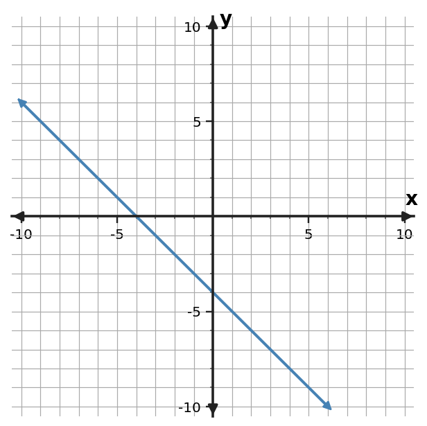
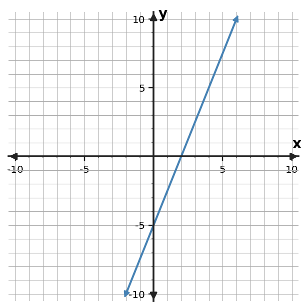

1. Find the slope of the line through $(2,1)$ and $(8,4)$.
Algebra Practice 2.1 :::: Set 3
2. Find the slope of the line through $(1,1)$ and $(4,10)$.
3. Find the slope of the line through $(1,4)$ and $(7,-5)$.
4. Use the table to determine the constant rate of change in $y$ per 1 unit of $x$.
| $x$ | $y$ |
|---|---|
| $0$ | $9$ |
| $2$ | $6$ |
| $4$ | $3$ |
| $6$ | $0$ |
5. Use the table to determine the constant rate of change in $y$ per 1 unit of $x$.
| $x$ | $y$ |
|---|---|
| $0$ | $1$ |
| $2$ | $5$ |
| $4$ | $9$ |
| $6$ | $13$ |
6. Use the table to determine the constant rate of change in $y$ per 1 unit of $x$.
| $x$ | $y$ |
|---|---|
| $0$ | $-2$ |
| $2$ | $3$ |
| $4$ | $8$ |
| $6$ | $13$ |
7. Determine the slope of the line shown. Use two grid points to support your calculation.

8. Determine the slope of the line shown. Use two grid points to support your calculation.

9. Determine the slope of the line shown. Use two grid points to support your calculation.

10. A reservoir level falls 28 centimeters over 7 hours. What is the constant rate in centimeters per hour?
11. A plant grows 12 centimeters over 4 weeks at a constant rate. What is the growth rate in centimeters per week?
12. A submarine descends 45 meters in 9 minutes at a constant rate. What is the rate of change in meters per minute?
13. Classify the slope of a line through $(1,2)$ and $(5,10)$.
14. Classify the slope of a line through $(-2,7)$ and $(4,1)$.
15. Classify the slope of a line through $(-3,5)$ and $(6,5)$.
16. A tank loses 20 liters in 4 minutes. Eli reports a slope of $+5$ liters per minute. Correct the sign of the reported rate.
17. Two points are $(2,3)$ and $(6,11)$. A student uses $\frac{11-3}{2-6}=-2$. Identify and repair the subtraction-order error.
18. A cyclist travels 18 miles in 1.5 hours. Jordan reports the rate as $12$ hours per mile. Correct the unit interpretation.
19. The rule is $y=4x+1$. Complete the input-output values and name one ordered pair generated by the rule.
| Input $x$ | Output $y$ |
|---|---|
| $-1$ | $-3$ |
| $0$ | $1$ |
| $2$ | $9$ |
20. The rule is $y=-2x+6$. Complete the input-output values and name one ordered pair generated by the rule.
| Input $x$ | Output $y$ |
|---|---|
| $-1$ | $8$ |
| $0$ | $6$ |
| $2$ | $2$ |
21. The rule is $y=3x-5$. Complete the input-output values and name one ordered pair generated by the rule.
| Input $x$ | Output $y$ |
|---|---|
| $-1$ | $-8$ |
| $0$ | $-5$ |
| $2$ | $1$ |
22. Determine whether the table shows a constant rate of change. If it does, state the rate.
| $x$ | $y$ |
|---|---|
| $0$ | $4$ |
| $2$ | $6$ |
| $4$ | $8$ |
| $6$ | $10$ |
23. Determine whether the table shows a constant rate of change. If it does, state the rate.
| $x$ | $y$ |
|---|---|
| $0$ | $7$ |
| $2$ | $1$ |
| $4$ | $-5$ |
| $6$ | $-11$ |
24. Determine whether the table shows a constant rate of change. If it does, state the rate.
| $x$ | $y$ |
|---|---|
| $0$ | $1$ |
| $2$ | $9$ |
| $4$ | $17$ |
| $6$ | $25$ |